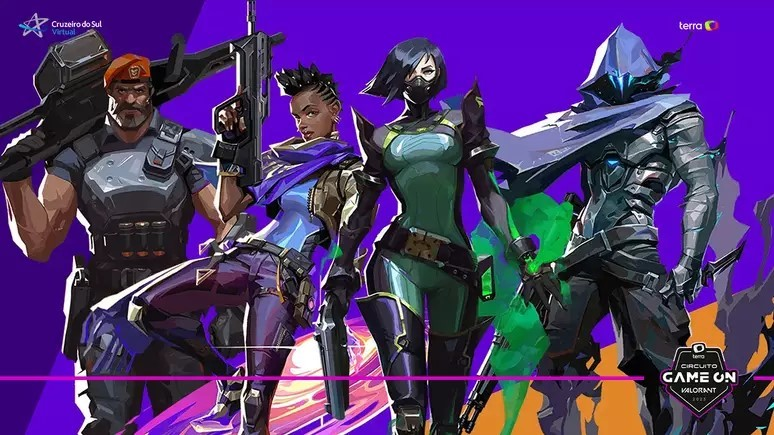

Bem-vindo ao Mundo de Valorant
Valorant é um jogo de tiro tático em primeira pessoa desenvolvido pela Riot Games, lançado em 2020. Ele combina elementos de jogos como CS:GO com habilidades únicas de personagens, conhecidos como Agentes. Cada partida oferece uma experiência estratégica onde trabalho em equipe e precisão são essenciais.

O que faz Valorant único?
Ao contrário de outros jogos de tiro, Valorant não se trata apenas de mira, mas de usar as habilidades de cada Agente de forma estratégica para garantir a vitória. As habilidades são únicas para cada Agente, proporcionando uma dinâmica de jogo interessante e criativa.
Escolha seu Agente
Com diversos Agentes disponíveis, cada um com habilidades distintas, o jogo exige que você compreenda bem o papel do seu Agente dentro da equipe. Escolher sabiamente pode ser a chave para o sucesso.
Jogue com Estratégia
Para vencer em Valorant, a habilidade de tiro é apenas uma parte do jogo. O verdadeiro diferencial está na coordenação com sua equipe e no uso inteligente das habilidades de cada agente. Comunicação eficiente é essencial para traçar estratégias, planejar avanços ou defender pontos importantes. Saber quando e como usar as habilidades pode virar o jogo, seja bloqueando a visão inimiga, controlando áreas ou criando oportunidades para eliminações. Trabalhe em conjunto, pense de forma estratégica e conquiste a vitória!